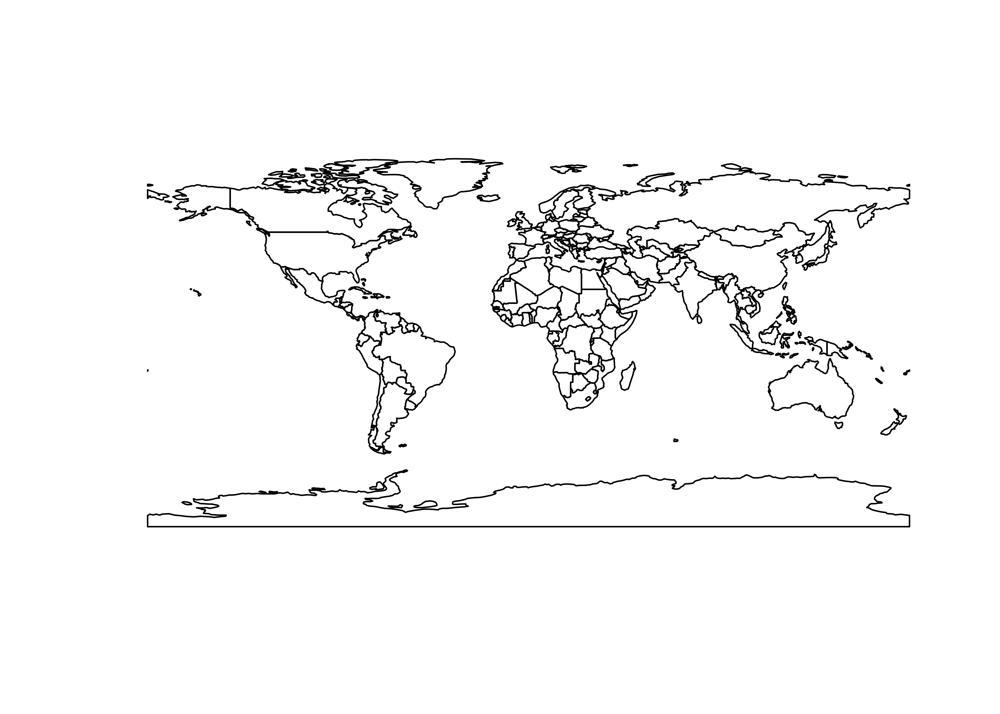
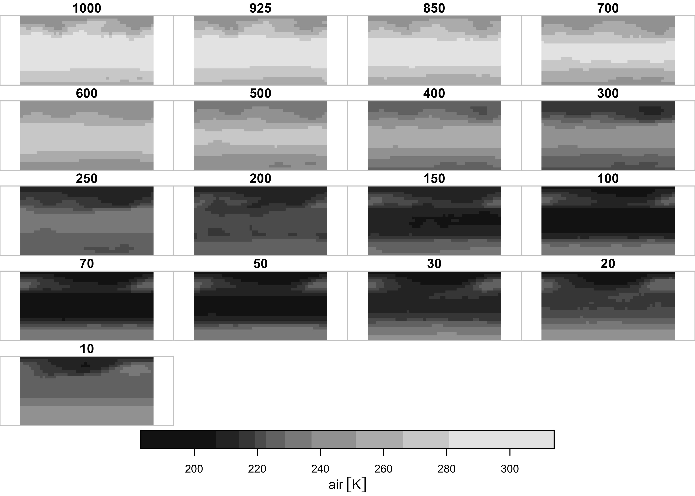
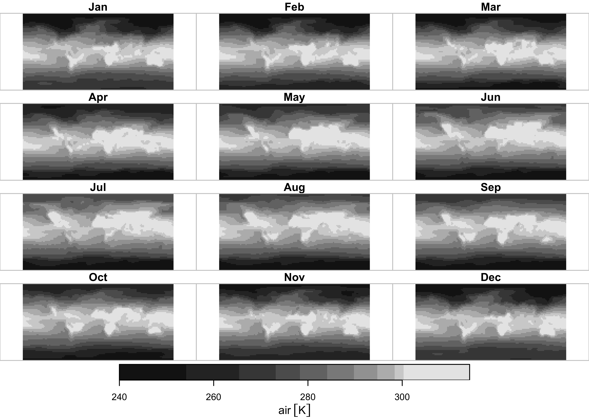
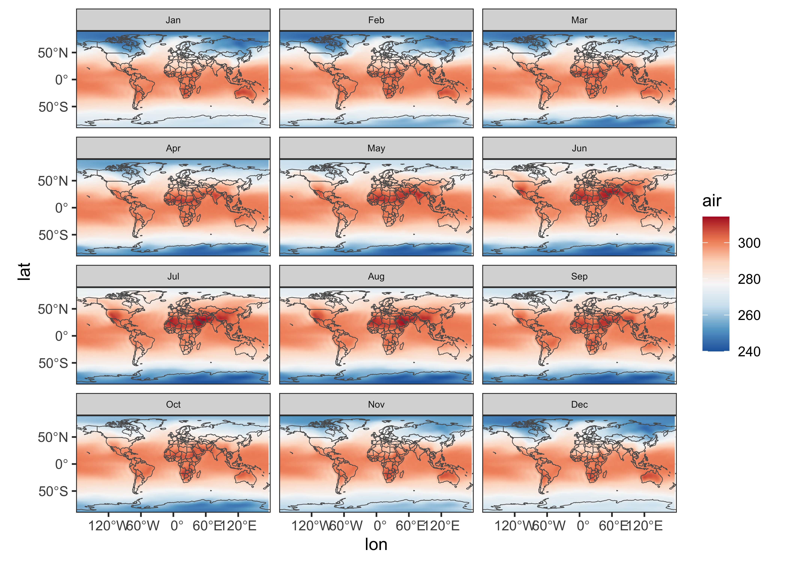
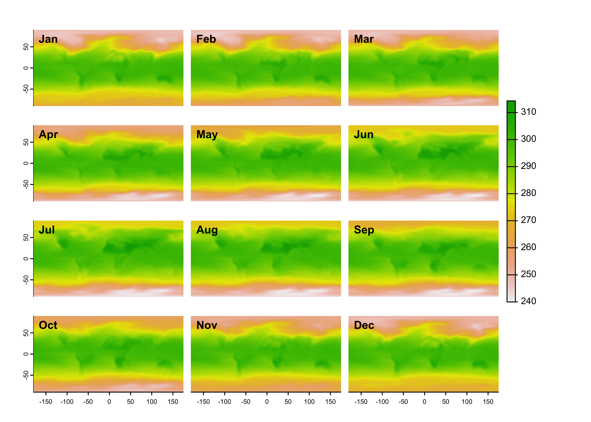

sf / stars / sftime
NOTE: This page has been revised
for the 2024 version of the course, but there may be some additional
edits.
1 Introduction
In addition to the terra package, there are three other
packages that are able to manage and analyze explicitly spatial and
spatiotemporal data in R. These include
sf(“simple features”) – the replacement for the original spatialsppackage in R, that links directly with theGEOS,GDAL, andPROJlibraies, and thus enables a broad range of mapping (including projection and coordinate transformations), and the application of geospatial analyses to spatial data [https://r-spatial.github.io/sf/index.html];stars– an extension tosf, which explicity handles space-time data on regular grids (data cubes) (and is a replacement for the olderspacetimepackage) [https://r-spatial.github.io/stars/index.html]; andsftimealso an extension to thesfpackage, which explicity includes a “time” variable [https://r-spatial.org/r/2022/04/12/sftime-1.html].
Each of these packages has a typical application: for
sf, general mapping and geospatial analyses, for
stars, the analysis of data cubes like those generated by
climate models, and for sftime, the analysis of data that
are not necessarily on regular grids in time or space, like earthquake
or paleoecological data. This is a really short introduction, the main
reference is Pebesma, E. and R. Bivand, 2023, Spatial Data Science
with Applications in R (CRC Press) [https://r-spatial.org/book/].
The sf package supports well the reading and writing of
“traditional” geospatial data formats, such as ESRI Shapefiles, which is
demonstrated here by reading a shape file from the NaturalEarth
collection [https://www.naturalearthdata.com].
Load the libraries:
Read a previously downloade shape file:
# world_sf
shapefile <-
"/Users/bartlein/Dropbox/DataVis/working/data/shp_files/ne_110m_admin_0_countries/ne_110m_admin_0_countries.shp"
world_sf <- st_read(shapefile)## Reading layer `ne_110m_admin_0_countries' from data source
## `/Users/bartlein/Dropbox/DataVis/working/data/shp_files/ne_110m_admin_0_countries/ne_110m_admin_0_countries.shp'
## using driver `ESRI Shapefile'
## Simple feature collection with 177 features and 94 fields
## Geometry type: MULTIPOLYGON
## Dimension: XY
## Bounding box: xmin: -180 ymin: -90 xmax: 180 ymax: 83.64513
## Geodetic CRS: WGS 84Get the outline and plot it, and note the class of the
world_otl_sf object
# get the just the outline (i.e. the st_geometry)
world_otl_sf <- st_geometry(world_sf)
plot(world_otl_sf) 
## [1] "sfc_MULTIPOLYGON" "sfc"Here’s a ggplot2() version of the world outline:
# ggplot map of world_outline
ggplot() +
geom_sf(data = world_otl_sf, fill = NA, col = "black") +
scale_x_continuous(breaks = seq(-180, 180, 30)) +
scale_y_continuous(breaks = seq(-90, 90, 30)) +
coord_sf(xlim = c(-180, +180), ylim = c(-90, 90), expand = FALSE) +
theme_bw()
ggplot2 allows fine control of such things as graticule
labeling, color scales, and so on.
2 stars
The stars package, like terra and
sf can easily read and write netCDF files. Here, we’ll look
at a couple of “reanalysis” datasets consisting of 4-dimensional cubes
of retrospective long-term means of climate data generated by
observations and a reanalysis climate model, where the dimensions are
longitude by latitude by level by time (and level refers to
elevation in the atmosphere as represented by pressure, e.g. level 1 is
at1000 hPa (i.e., the surface), level 6 is at 500 hPa (upper air)).
2.1 Read some data
Read the pressure-surface heights:
# stars
nc_file <- "/Users/bartlein/Projects/RESS/data/nc_files/NCEP2_hgt.mon.ltm.1991-2020.nc"
hgt <- read_ncdf(nc_file, var = "hgt", proxy = FALSE)
# list some info
hgt## stars object with 4 dimensions and 1 attribute
## attribute(s), summary of first 1e+05 cells:
## Min. 1st Qu. Median Mean 3rd Qu. Max.
## hgt [m] -133.7667 1339.558 4405.3 5014.268 8540.267 12480.2
## dimension(s):
## from to offset delta refsys values x/y
## lon 1 143 -181.2 2.5 WGS 84 NULL [x]
## lat 1 73 91.25 -2.5 WGS 84 NULL [y]
## level 1 17 NA NA NA [17] 10,...,1000
## time 1 12 NA NA POSIXct 0000-12-30,...,0001-11-29## lon lat level time
## 143 73 17 12The time-dimension values in this data set are in the “time-since”
format, which read_ncdf() interprets in a somewhat awkward
year-month-day format. They can be replaced by text labels:
# replace time dimension values
attr(hgt, "dimensions")$time$values <-
c("Jan", "Feb", "Mar", "Apr", "May", "Jun", "Jul", "Aug", "Sep", "Oct", "Nov", "Dec")
attr(hgt, "dimensions")$time$refsys <- "Name"
hgt## stars object with 4 dimensions and 1 attribute
## attribute(s), summary of first 1e+05 cells:
## Min. 1st Qu. Median Mean 3rd Qu. Max.
## hgt [m] -133.7667 1339.558 4405.3 5014.268 8540.267 12480.2
## dimension(s):
## from to offset delta refsys values x/y
## lon 1 143 -181.2 2.5 WGS 84 NULL [x]
## lat 1 73 91.25 -2.5 WGS 84 NULL [y]
## level 1 17 NA NA NA [17] 10,...,1000
## time 1 12 NA NA Name Jan,...,DecPlot the pressure-surface heights. Ignore the bounding-box warning.

What seems to get plotted is the long-term means of one month at the different levels. Plot a single level, here level 6, or the 500 hPa level.

Repeat for air temperature (air in this data set):
nc_file <- "/Users/bartlein/Projects/RESS/data/nc_files/NCEP2_air.mon.ltm.1991-2020.nc"
air <- read_ncdf(nc_file, var = "air", proxy = FALSE)
air## stars object with 4 dimensions and 1 attribute
## attribute(s), summary of first 1e+05 cells:
## Min. 1st Qu. Median Mean 3rd Qu. Max.
## air [K] 209.071 232.305 253.0591 253.473 273.3577 308.6734
## dimension(s):
## from to offset delta refsys values x/y
## lon 1 143 -181.2 2.5 WGS 84 NULL [x]
## lat 1 73 91.25 -2.5 WGS 84 NULL [y]
## level 1 17 NA NA NA [17] 10,...,1000
## time 1 12 NA NA POSIXct 0000-12-30,...,0001-11-29## lon lat level time
## 143 73 17 12# replace time dimension values
attr(air, "dimensions")$time$values <-
c("Jan", "Feb", "Mar", "Apr", "May", "Jun", "Jul", "Aug", "Sep", "Oct", "Nov", "Dec")
attr(air, "dimensions")$time$refsys <- "Name"
air## stars object with 4 dimensions and 1 attribute
## attribute(s), summary of first 1e+05 cells:
## Min. 1st Qu. Median Mean 3rd Qu. Max.
## air [K] 209.071 232.305 253.0591 253.473 273.3577 308.6734
## dimension(s):
## from to offset delta refsys values x/y
## lon 1 143 -181.2 2.5 WGS 84 NULL [x]
## lat 1 73 91.25 -2.5 WGS 84 NULL [y]
## level 1 17 NA NA NA [17] 10,...,1000
## time 1 12 NA NA Name Jan,...,Dec

2.2 ggplot2 maps
ggplot2 has a function geom_stars() that
“knows” how to plot stars data objects: Here’s a plot of
500 hPa (level 6) heights:
# stars ggplots
ggplot() +
geom_stars(data = slice(hgt, level, 6)) +
geom_sf(data = world_otl_sf, fill = NA) +
facet_wrap(~ time, nrow = 4, ncol = 3) +
coord_sf(xlim = c(-180, +180), ylim = c(-90, 90), expand = FALSE) +
scale_fill_distiller(palette = "PuOr") +
theme_bw() + theme(strip.text = element_text(size = 6))
Here, the stars object was plotted first, followed by
the world world outline. The facet_wrap() function controls
the paneling, and the expand = FALSE argument of the
coord_sf() function removes some of the white space between
panels. The theme(strip.text = element_text(size = 6))
function makes the “header” boxes and fonts a little smaller.
Here’s the plot for near-surface air temperature:
ggplot() +
geom_stars(data = slice(air, level, 1)) +
geom_sf(data = world_otl_sf, fill = NA) +
facet_wrap(~ time, nrow = 4, ncol = 3) +
coord_sf(xlim = c(-180, +180), ylim = c(-90, 90), expand = FALSE) +
scale_fill_distiller(palette = "RdBu") +
theme_bw() + theme(strip.text = element_text(size = 6))
2.3 Converting stars objects to terra and sf
stars objects, in particular 3-dimensional data cubes,
can be easily converted to terra and sf
objects (i.e. raster stacks, or SpatRaster objects in
terra and in sf). To demonstrate this, get a
single 3-d “slice” of air temperature from the 4-d cube:
## [1] "stars"## lon lat level time
## 143 73 17 12So air is a 4-d object. Now get the slice (at 1000
hPa):
## [1] "stars"## stars object with 3 dimensions and 1 attribute
## attribute(s):
## Min. 1st Qu. Median Mean 3rd Qu. Max.
## air [K] 239.9924 269.3894 284.1218 281.2621 296.84 314.302
## dimension(s):
## from to offset delta refsys values x/y
## lon 1 143 -181.2 2.5 WGS 84 NULL [x]
## lat 1 73 91.25 -2.5 WGS 84 NULL [y]
## time 1 12 NA NA Name Jan,...,Dec## lon lat time
## 143 73 12Now convert that 3-d slice to terra
## [1] "SpatRaster"
## attr(,"package")
## [1] "terra"## class : SpatRaster
## dimensions : 73, 143, 12 (nrow, ncol, nlyr)
## resolution : 2.5, 2.5 (x, y)
## extent : -181.25, 176.25, -91.25, 91.25 (xmin, xmax, ymin, ymax)
## coord. ref. : lon/lat WGS 84
## source(s) : memory
## names : Jan, Feb, Mar, Apr, May, Jun, ...
## min values : 244.2550, 244.2596, 245.4530, 241.4906, 239.9924, 240.1938, ...
## max values : 308.6734, 307.2127, 307.9087, 309.1877, 311.3960, 313.2636, ...Notice that the spatial extent is a little odd. We know from the original netCDF file that the western edge of the grid is at -180.0E, and the southern edge at -90.0N. The correct spatial exent can be restored like this:
The dataset, which is now a terra object can be plotted
as usual:
